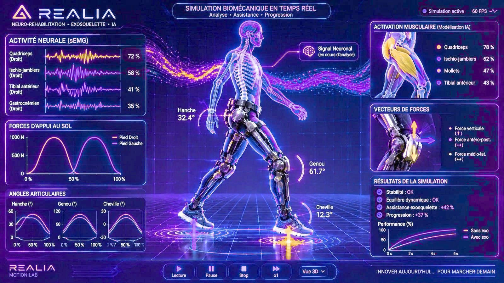
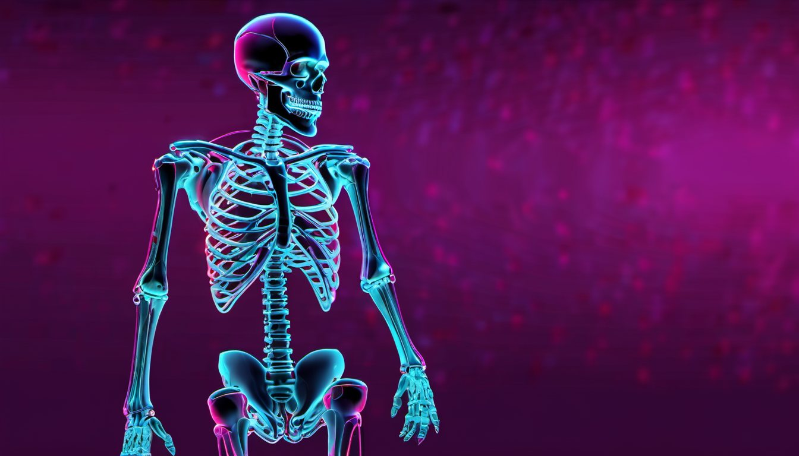

🚧 EN CHANTIER — LANCEMENT DÈS FINANCEMENT
Le corps avant le métal
Régler un exosquelette sur une personne, c'est usiner une pièce par essai. Dans un simulateur, c'est changer un nombre. Voilà pourquoi le jumeau numérique passe avant la première vis.

Pourquoi simuler d'abord
La cinématique de hanche et de genou dépend de la morphologie. Tester ces réglages sur un banc virtuel évite d'usiner dix pièces fausses.

MuJoCo d'abord, Isaac Sim ensuite
MuJoCo tourne sur le poste de terrain et donne des contacts crédibles. Isaac Sim apporte le rendu et la vision, quand le GPU suit.
Étape 1 — le flux de signaux.
Ce qui sera publié
Modèles, paramètres de séance et courbes de latence : de quoi refaire la manipulation ailleurs, y compris quand ça rate.